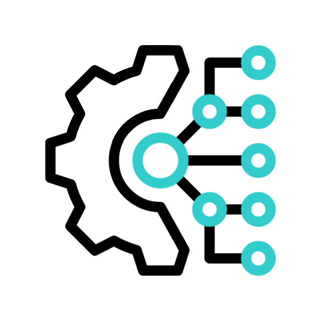

Термин «технология» – это не просто скучное слово из словаря, а мощное
понятие,
которое
определяет наше современное общество. Она окружает нас повсюду, помогает упростить
нашу жизнь и сделать ее более комфортной. Без технологий мы не можем себе
представить свою повседневность - от мобильных устройств до автоматизированных систем в
наших домах.
Чтобы понять истинное значение этого термина, нужно заглянуть в историю развития
человечества. От
простейших инструментов до высокотехнологичных устройств - технологии помогали нам улучшить
нашу
жизнь и преодолеть препятствия. Сегодня мы живем в эпоху
цифровых технологий, и где каждый шаг сопровождается инновациями и новыми возможностями

История и эволюция понятий и терминов в сфере технологий
История технологий насчитывает тысячелетия развития
человечества.
С древних времен люди использовали различные инструменты и знания для улучшения своей жизни. От
примитивных каменных орудий до современных высокотехнологичных
устройств – путь развития технологий был сложным и увлекательным.
Слово "технология" происходит от греческого термина
"τεχνολογία",
который можно перевести как "искусство"
или "умение". Именно эти понятия лежат в основе термина "технология" – умение применять знания и
инструменты для достижения определенной цели.
Влияние технических новшеств на повседневную жизнь
Слово "технология" уже давно стало обыденным для большинства из нас. Мы точно знаем, что
это обширное понятие включает в себя все совокупность способов и методов производства,
применяемых в различных областях нашей жизни. Без технологий невозможно представить себе наше
современное существование.
Одной из главных ролей
технологий
является улучшение качества жизни людей. Благодаря
новым техническим
возможностям удается значительно упростить многие повседневные задачи: общение,
транспортировка, работа, развлечения.
Технологии также
играют важную роль
в повышении производительности труда. Новые
технические решения позволяют ускорить процессы производства, сделать их более эффективными
и экономичными.
В современном информационном
обществе технологии выступают как основной инструмент в обработке и передаче
информации. Мы постоянно читаем о новейших технологических открытиях, которые меняют наш
мир.
Таким образом, технологии являются неотъемлемой частью нашей жизни, они определяют наши возможности,
заставляют нас развиваться и меняться вместе
с ними. Понимание и использование современных технологий становится необходимым условием для
успешной адаптации к быстро меняющемуся миру.
Разнообразие современных видов технологий
1
Информационные
Информационные технологии занимаются сбором, хранением,
обработкой и передачей данных при помощи компьютеров и сетей.
2
Биотехнологии
Биотехнологии используют биологические процессы и организмы для
создания новых продуктов и улучшения существующих.
3
Энергетические
Энергетические технологии производят, передают и используют
энергию для удовлетворения потребностей общества.
Преимущества и недостатки развития современных технических решений
Основной аспект технологий заключается в постоянном развитии и улучшении имеющихся
технических
решений для оптимизации процессов и улучшения качества жизни. Однако в этом процессе существуют как
положительные, так и отрицательные стороны.
Преимущества развития технологий кроются в возможности ускорить производственные процессы,
повысить эффективность работы, улучшить качество
продукции, упростить повседневные задачи. Благодаря новым техническим решениям мы можем выполнить
задачи быстрее, эффективнее и даже экономить время и ресурсы.
Однако, развитие технологий также имеет свои недостатки. Среди них можно выделить угрозу для
приватности и
безопасности, увеличение зависимости от техники, создание перерывов в коммуникации, а также
потенциальное исчезновение рабочих мест из-за автоматизации процессов.
Технологический прогресс: куда нас ведет будущее?
Основная идея данного раздела заключается в рассмотрении технологий будущего,
которые
изменят наш мир и способ общения. Понятие прогресса в технологиях включает в себя не только
разработку новых устройств и программ, но и изменение способов взаимодействия людей между собой.
Слово "инновация" играет ключевую роль в развитии технологий, ведь именно благодаря
постоянным изменениям и усовершенствованиям мы можем ожидать удивительных возможностей в
будущем.
Термин "цифровизация" также заслуживает внимания, ведь с каждым годом наш мир становится всё
более
цифровым и интерактивным.